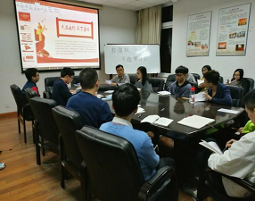
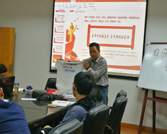
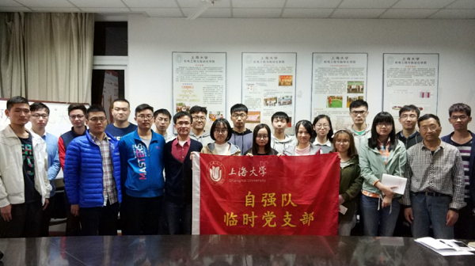

|  |  |
2017年11月11日晚上19时，上海大学自强队临时党支部学习十九大精神交流会暨自强队临时党支部换届选举大会在延长校区电机楼202会议室圆满举行。参加本次会议的人员有上海大学自强队指导教师黄慎之老师，自强队临时党支部书记叶立俊同学以及自强队全体党员同学和部分入党积极分子及团员。
会议首先由自强队临时党支部书记叶立俊同学对刚刚闭幕的十九大进行了高度的概括和总结。中国共产党第十九次全国代表大会，是在全面建成小康社会决胜阶段、中国特色社会主义进入新时代的关键时期召开的一次十分重要的大会。叶立俊同学从过去五年党和国家所取得的历史性成就谈起，向同学们介绍了新时代下中国共产党面临的历史使命和中国特色社会主义思想及基本方略，并就党在经济、制度、文化、民生、生态、从严治党等诸多方面做出的努力和在座的队员们进行了交流。叶立俊同学表示，在今后一段时期里，要把学习贯彻十九大精神和自强队当前工作紧密联系起来，不断开拓创新，抓实抓好学习落实。
会上，自强队指导教师黄慎之老师带领队员们一起研读了十九大报告的具体内容，并再次号召自强队全体队员学习领悟十九大精神。黄老师强调，习总书记提出的“两学一做”是指学党章党规、学系列讲话、做合格党员，开展“两学一做”学习教育活动，基础在学习，关键在落实，就是要求同学们做到知行合一、表里如一，身为青年一代的学生党员更应如此。值得一提的是，黄老师还向同学们展示了第三届“飞思卡尔杯”全国大学生智能车竞赛队服。这件队服不仅见证了黄老师对自强队的倾心付出以及自强队一路走来不畏艰险的拼搏精神，而且再次诠释了共产党员不忘初心、与群众肩并肩的良好风貌。借此机会，黄老师高歌一曲，鼓励全体队员秉承自强不息的作风，迎难而上、开拓进取、革故鼎新、励精图治。
紧接着，自强队临时党支部举行了换届选举大会。经前期自强队各组党员同学的积极申报，本着公平公正的原则，并结合各位竞选人的自身特点，本支部共推选出4名候选人参选。会上，在各位候选人在发表慷慨激昂的竞选宣言后，经正式党员无计名投票，会议选举产生叶立俊、胡晨潇、耿许武三位同学分别担任自强队临时党支部新一届的支部书记、支部组织委员和支部宣传委员。换届选举过后，叶立俊同学对自强队临时党支部九年的发展历程做了简单的回顾并向同学们汇报了目前自强队临时党支部的建设情况以及对未来的美好规划。自强队临时党支部自2008年成立以来始终遵循“本硕联动、发展科创”的新型培养模式，坚持“以党建推进科创、以科创促进党建”的发展理念。叶立俊表示，前不久在自强队开启的“2017梯度建设计划”和即将实施的“绿荫公益支教”活动将再次为队伍注入新鲜活力，在磨砺队员意志的同时进一步增强团队凝聚力。
最后，自强队家庭组领队任明宇同学、自强队研一队员胡晨潇同学和自强队队员代表张圆圆同学等一一发表了自己的感想，队员们表示从老党员的内心深处看到了对共产主义的坚定信念，看到了对自强队未来的美好前景，并表示会继续秉持“坚韧、团结、创新、主动”的自强队队训，将自强队建设成为一个相亲相爱的大家庭，共同努力，共同进步。
溪涧焉能留得住，终须大海作波涛。本次党支部十九大精神交流会在一片掌声中圆满结束。希望自强队的所有成员深刻领会十九大的精神，紧密团结在自强队临时党支部周围，不忘初心，牢记使命，砥砺前行，以不辞辛劳的高尚情操和坚持不懈的顽强决心，为美好的明天谱写更为绚丽多姿的乐章。
上海大学自强队供稿
2017年11月12日